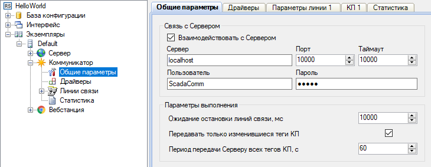

Приложение Коммуникатор выполняет следующие функции:

Рис. 1. Графическая оболочка для настройки Коммуникатора
Коммуникатор автоматически записывает в текстовые файлы информацию о работе приложения, линий связи, каждого подключенного устройства. Коммуникатор является службой, которая не имеет пользовательского интерфейса. Графическая оболочка для настройки Коммуникатора встроена в приложение Администратор (рис. 1). Режим работы Коммуникатора круглосуточный. Сторонние разработчики имеют возможность реализовывать собственные драйверы для взаимодействия Коммуникатора с различными устройствами.